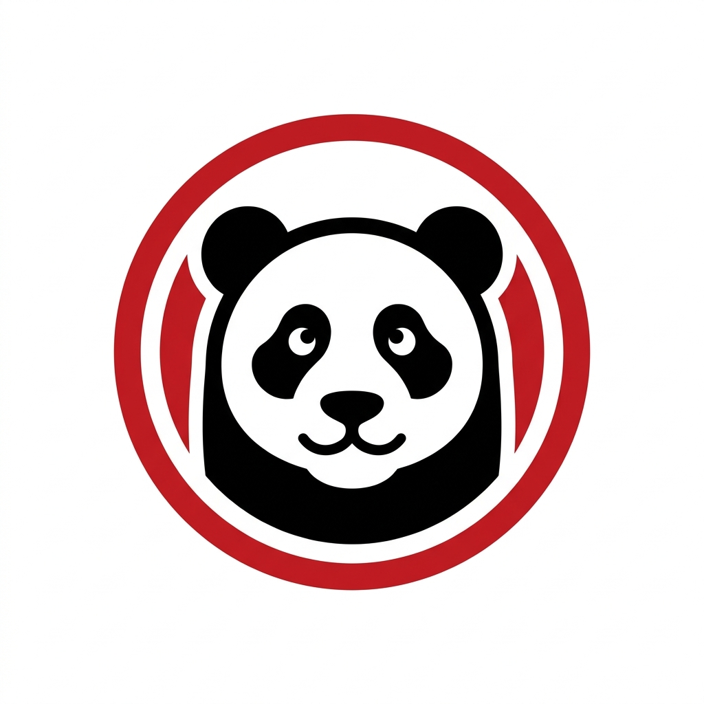

Panda Express Calories &
Nutrition Calculator
Use our interactive Panda Express calorie calculator to customize your coffees, teas, refreshers, and bakery orders. Select sizes, milk choices, and track calories, protein, carbs, and fat in real-time to plan your healthy coffee runs.
Build your order

Results are estimates based on common US menu nutrition data. Location recipes and portions may vary.
Panda Express Nutrition & Macro Tracking Guide
Panda Express is famous for its endless customizations, but those extra pumps of syrup and splashes of cream can quickly add up. Whether you are tracking macros for weight loss, muscle gain, or just general awareness, this independent Panda Express calorie calculator removes the guesswork. While you are tracking your morning coffee, do not forget to plan your lunch with our McDonald's Calorie Calculator or our Chipotle Nutrition Calculator to keep your entire day's macros on track.
How to Use the Panda Express Calorie Calculator
Tracking your coffee order shouldn't be complicated. Here is how to get the most accurate nutrition estimate for your next Panda Express run:
- Select Your Base Drink: Choose from popular options like the Iced Latte, Caramel Macchiato, or Cold Brew.
- Adjust Your Size: Switch between Tall (12oz), Grande (16oz), and Venti (20oz or 24oz for iced) to see how volume impacts calories and carbs.
- Customize Your Milk: See in real-time how swapping Whole Milk for Almond Milk or Oat Milk changes the fat and calorie count.
Popular Panda Express Orders & Their Macros
If you need inspiration, here are the estimated nutrition breakdowns for some of the most popular Grande (16oz) Panda Express drinks.
| Menu Item | Calories | Protein | Carbs | Fat |
|---|---|---|---|---|
| Iced Caramel Macchiato (2% Milk) | 250 | 8g | 35g | 7g |
| Vanilla Sweet Cream Cold Brew | 110 | 1g | 14g | 5g |
| Iced Brown Sugar Oatmilk Shaken Espresso | 120 | 2g | 20g | 3g |
| Caffè Americano (Black) | 15 | 1g | 2g | 0g |
| Matcha Tea Latte (Almond Milk) | 120 | 3g | 18g | 4g |
Making Healthy Choices at Panda Express
You do not have to drink black coffee to hit your fitness goals. A few simple swaps can save hundreds of calories:
The "Skinny" Hack
Swap standard syrups for Sugar-Free Vanilla to save around 20 calories and 5g of sugar per pump. This is the fastest way to drop 60-80 empty calories from a Grande latte.
Milk Strategy
Almond milk is typically the lowest-calorie option at Panda Express (around 60 calories per cup), making it a great choice for iced lattes. If you want creaminess, ask for a "light splash" of heavy cream rather than making it the base.
Skip the Whip
Whipped cream on a Grande drink adds roughly 80-110 calories and a significant amount of saturated fat. Ask for "No Whip" to instantly improve the macro profile of your Frappuccino or Mocha.
Frequently Asked Questions (FAQs)
What is the lowest-calorie item at Panda Express?
Black coffee (Pike Place Roast, Cold Brew, or an Americano) contains less than 15 calories per Grande. For flavored drinks, the Iced Shaken Espresso with almond milk and sugar-free syrup is an excellent low-calorie choice.
Are Panda Express sugar-free syrups actually zero calorie?
Yes, the Sugar-Free Vanilla syrup contains zero calories and zero sugar, as it is sweetened with sucralose. However, be aware that the base espresso or milk still contains calories.
How many calories does a pump of Panda Express syrup have?
A standard pump of classic syrup (like Vanilla, Caramel, or Hazelnut) contains about 20 calories and 5 grams of sugar. A Grande drink typically comes with 4 pumps (80 calories).
Is Oat Milk or Almond Milk lower in calories?
Almond milk is lower in calories. Panda Express' almond milk has roughly 60 calories per cup, while their oat milk (Oatly Barista Edition) is creamier but contains about 140 calories per cup.
What is the healthiest Frappuccino?
The Coffee Frappuccino (made with nonfat milk and no whip) is generally the lowest calorie option, coming in at around 160 calories for a Grande. Avoid the Java Chip or Mocha versions which exceed 400 calories.
Do the Refreshers have a lot of sugar?
Yes, a Grande Strawberry Açaí Refresher contains roughly 90 calories and 20g of sugar. They are made with a fruit juice base which naturally contains sugar.
Can I track macros accurately here?
While this calculator provides highly accurate estimates based on standard corporate recipes, remember that real-world barista preparation (like a heavy pour of cream or an extra pump of syrup) can slightly alter the final macros.
Plan the treat.
Keep the joy.
This Panda Express calorie calculator helps you compare popular coffee-shop favourites before you order. Choose a drink, select common size and milk options, and use the instant result as a practical guide for your day.
Food and drink nutrition can vary by market and recipe. For allergies, medical diets, or an exact current ingredient list, always check Panda Express’ official information directly.
Panda Express
questions.
Does changing the milk change calories?+
Usually, yes. Dairy and plant milks can meaningfully change calories and fat. This calculator applies a typical adjustment for the selected milk option.
Are syrups and toppings included?+
The displayed base is an estimate for the listed item. Ask at the store about exact recipe changes, especially for syrup, sauces and toppings.
Is this an official Panda Express tool?+
No. NutriRoute is independent and is not affiliated with Panda Express. This page is for information only.